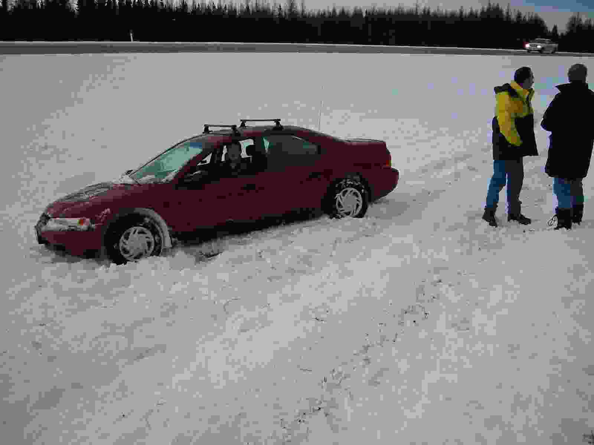
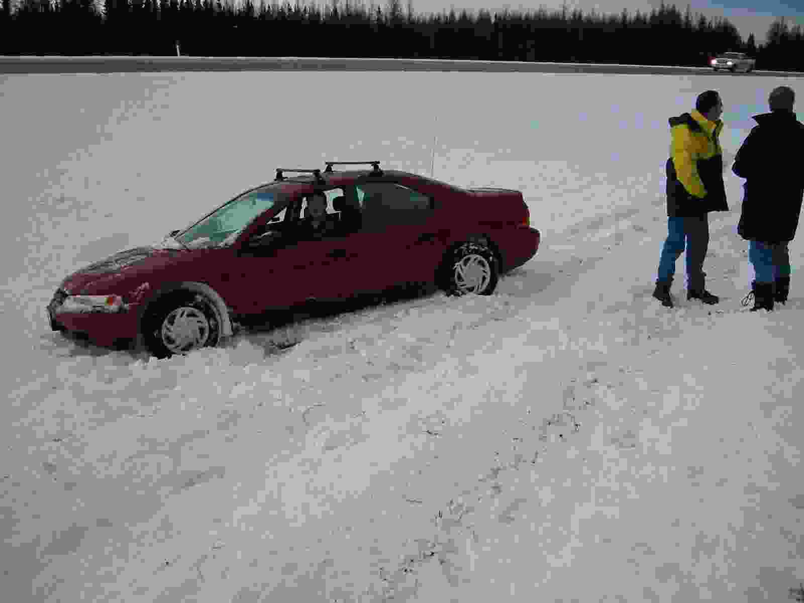
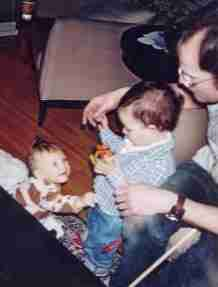
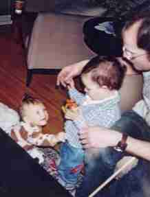

2003: Comida Caseira ao Redor do Mundo

No momento em que mais um final de ano se
aproxima, e' hora de compartilhar com amigos e familiares os
principais acontecimentos do nosso ano. Se voce clicar com o botao
esquerdo do mouse nas fotos abaixo, voce podera ver uma versao
ampliada de cada foto.
This letter is also available in English
Em Dezembro de 2002 nos retornamos de Oklahoma entre o Natal e o Ano
Novo e passamos a noite de ano novo com muitos amigos na casa de
nossos amigos Paul e Don.
 Em Janeiro nos fomos no tradicional fim-de-semana de esqui em Jasper com
Em Janeiro nos fomos no tradicional fim-de-semana de esqui em Jasper com
  o meu departamento. A
temperatura estava surpreendentemente alta (em torno de +1C) o que
torna as estradas muito perigosas no inverno. Na viagem de retorno
nos encontramos um trecho com "gelo preto" na estrada que e' muito
dificil de perceber. Nos acabamos no barranco depois de um
sensasional giro de 180 graus que acordou o Scott que estava deitado
no banco traseiro do carro. Nossos amigos Duane e Marie pararam para
tentar nos ajudar. Enquanto nos estavamos esperando por um guincho
para tirar o nosso carro do barranco, um outro carro perdeu o
controle e bateu no carro da Marie causando danos severos. Para
completar a aventura, um quarto carro perdeu o controle e caiu fora
da estrada passando exatamente no ponto onde nos estavamos segundos
atras (antes de nos corrermos para as arvores para escapar). Nos
passamos varias horas em pe em 30 cm de neve. No final nosso carro
foi retirado do barranco, sem nenhum arranhao, a estrada foi
interditada por varias horas, e nos dirigimos para casa enquanto
nossos amigos tiveram que retornar de onibus porque o carro deles nao
podia andar.
 o meu departamento. A
temperatura estava surpreendentemente alta (em torno de +1C) o que
torna as estradas muito perigosas no inverno. Na viagem de retorno
nos encontramos um trecho com "gelo preto" na estrada que e' muito
dificil de perceber. Nos acabamos no barranco depois de um
sensasional giro de 180 graus que acordou o Scott que estava deitado
no banco traseiro do carro. Nossos amigos Duane e Marie pararam para
tentar nos ajudar. Enquanto nos estavamos esperando por um guincho
para tirar o nosso carro do barranco, um outro carro perdeu o
controle e bateu no carro da Marie causando danos severos. Para
completar a aventura, um quarto carro perdeu o controle e caiu fora
da estrada passando exatamente no ponto onde nos estavamos segundos
atras (antes de nos corrermos para as arvores para escapar). Nos
passamos varias horas em pe em 30 cm de neve. No final nosso carro
foi retirado do barranco, sem nenhum arranhao, a estrada foi
interditada por varias horas, e nos dirigimos para casa enquanto
nossos amigos tiveram que retornar de onibus porque o carro deles nao
podia andar.
Conferencias academicas me levaram aos lugares usuais: San Francisco
em Marco, San Diego em Junho, e Toronto em Outubro. Eu estava em San
Francisco durante o pico dos protestos contra a guerra no Iraque. Foi
bom ouvir as vozes de cidadaos Americanos expressando o seu
descontentamento. Tambem foi muito bom cozinhar com o Kagan e o Kurt
no novo condominio do Kagan e da Irem em San Francisco.


 Em Marco eu comecei uma serie de "festa de cozinhar juntos" na nossa casa. Eu planejo o menu, reuno os ingredientes, e convido varios amigos para cozinharmos juntos. Usualmente somente um membro de cada casal e' convidado para cozinhar, enquanto o/a parceiro/a vem mais tarde para o jantar. Nos nos divertimos muito com estas festas.
Em Marco eu comecei uma serie de "festa de cozinhar juntos" na nossa casa. Eu planejo o menu, reuno os ingredientes, e convido varios amigos para cozinharmos juntos. Usualmente somente um membro de cada casal e' convidado para cozinhar, enquanto o/a parceiro/a vem mais tarde para o jantar. Nos nos divertimos muito com estas festas.
 Na primeira destas festas
nos cozinhamos um gratin de espinafre, um frango assado, gnochis
feitos em casa, e um tart tartin de maca.
Na primeira destas festas
nos cozinhamos um gratin de espinafre, um frango assado, gnochis
feitos em casa, e um tart tartin de maca.
Eu passei a maior parte do mes de Abril na Europa. Primeiro em
Varsovia na Polonia onde eu participei de uma conferencia. Nevou a
semana inteira enquanto eu estava em Varsovia. Depois eu fui visitar a
Silvia e o novo marido dela, Ruud, em Amsterdam. Ruud disse que eu
peguei todos os quatro dias de sol que Amsterdam tem direito em um
ano! Nos nos divertimos muito passeando de carro em torno de
Amsterdam, Haarlem e Haguia. Era a estacao das tulipas e nos vimos
muitos campos cobertos de tulipas em flores. Nos tivemos um belo
jantar no alto de uma plataforma sobre o mar, fomos para o distrito de lampadas vermelhas
e tambem cozinhamos em casa. Alem de visitar a Silvia e o Ruud, eu
tambem aproveitei para ver muitas das pinturas originais dos grandes
mestres holandeses no Rijsksmuseum e uma excelente exibicao no Van
Gough's Museum chamada "Van Gough's Choice". Esta exibicao consiste de
uma colecao de obras de arte de outros artistas que Van Gough tinha em
seu atelier, ou que o influenciaram.

 De Amsterdam eu fui para Paris onde
eu passei a Pascoa sozinho, visitando museus e aproveitando uma linda
primavera em Paris. Eu terminei a minha turne Europeia em Nice onde
eu participei de outra conferencia e fui convidado para um banquete
em Monaco e para um jantar a bordo de um barco na baia de
Cannes. Inspirados em cartoes postais que eu trouxe de Nice, nos
mandamos pintar a nossa casa de uma cor chamada "Ouro Cortez" que e'
um amarelo brilhante, uma cor muito provencal.
De Amsterdam eu fui para Paris onde
eu passei a Pascoa sozinho, visitando museus e aproveitando uma linda
primavera em Paris. Eu terminei a minha turne Europeia em Nice onde
eu participei de outra conferencia e fui convidado para um banquete
em Monaco e para um jantar a bordo de um barco na baia de
Cannes. Inspirados em cartoes postais que eu trouxe de Nice, nos
mandamos pintar a nossa casa de uma cor chamada "Ouro Cortez" que e'
um amarelo brilhante, uma cor muito provencal.
Em Maio o avo do Scott, O. D. Brown, morreu. Scott voou para Oklahoma
para participar do funeral em Tulsa, mas eu so' pude ir alguns dias
mais tarde para o casamento do primo do Scott. Nos tinhamos visto
O. D. pela ultima vez quando nos visitamos Tulsa em Dezembro de
2002. Ele estava no hospital e a saude dele ja' era precaria. Ele
estava muito emocionado quando nos fomos visita-lo. Scott e' o mais
velho de todos os netos e era muito apegado ao avo. Eu acho que os
eventos e as emocoes daquela semana foram resumidos para mim quando eu
vi a tia do Scott, Diane, parada na sala tentando decidir se as flores
que tinham sido usadas para o funeral do pai dela ainda estavam em
condicoes para serem mostradas na celebracao do casamento do
filho. Enquanto nos estavamos em Tulsa nos tambem fomos visitar pela
ultima vez a casa onde os avos do Scott moraram por muitos anos. A
avo' do Scott, Bebe, mudou-se para um apartamento com servicos e a
casa estava sendo preparada para venda. Nos selecionamos alguns
utensilhos de cozinha e livros de receita e trouxemos conosco. Nos
pensamos na Bebe cada vez que usamos as panelas dela.
Em Junho nos fomos visitar nossos amigos Terry e Kate Caelli na
casa de ferias deles na Ilha de Gabriola na costa de British Columbia,
perto de Vancouver. Eles tem uma casa muito bonita com uma vista do
mar. Foi muito agradavel visitar feiras de vegetais, queijos,
e paes, cozinhamos varias refeicoes deliciosas na casa, e fomos num
passeio de barco com o Terry. A Kate organizou uma excelente festa na
casa onde nos encontramos varios dos "Amigos da Ilha", um excelente
grupo de pessoas. Nos todos aproveitamos muito.

 En Julho nos fomos com nossos amigos Walter e Mario para o
Skoki Lodge que fica nas
montanhas em torno de Lake Louise. O lodge fica a +/- 11 kilometros da
estrada mais proxima. Apesar de estarmos no meio do verao, na primeira
manha nos acordamos com uma tempestade de neve que nao deixava ver
nada. A tempestade passou logo e naquela tarde nos ja' estavamos
fazendo caminhadas pelas montanhas. Como e' usual nestes lodges, a
comida e a hospitalidade foram otimas. Como nos outros lodges nao tem
agua corrente ou eletricidade. Durante a nossa caminhada de retorno
nos vimos as vistas mais bonitas que eu ja' vi em todas as nossas
caminhadas e passeios de carro pelas montanhas.
En Julho nos fomos com nossos amigos Walter e Mario para o
Skoki Lodge que fica nas
montanhas em torno de Lake Louise. O lodge fica a +/- 11 kilometros da
estrada mais proxima. Apesar de estarmos no meio do verao, na primeira
manha nos acordamos com uma tempestade de neve que nao deixava ver
nada. A tempestade passou logo e naquela tarde nos ja' estavamos
fazendo caminhadas pelas montanhas. Como e' usual nestes lodges, a
comida e a hospitalidade foram otimas. Como nos outros lodges nao tem
agua corrente ou eletricidade. Durante a nossa caminhada de retorno
nos vimos as vistas mais bonitas que eu ja' vi em todas as nossas
caminhadas e passeios de carro pelas montanhas.
  Nos ficamos muito felizes
de poder passar a maior parte de Julho e Agosto em casa em Edmonton
aproveitando o bonito clima e visitando com amigos
frequentemente. Nossos amigos Phil e Ken tem um filho, Ethan, que
agora esta' com dois anos. Nos tambem conhecemos novos amigos, Don e
Alayne, que tambem tem um menino, Jude. Portanto nos tivemos mais
contato com criancas este ano, o que foi muito bom. Nos tambem
tivemos mais jantares para ir pois tanto o Don quanto a Alayne gostam
de cozinhar e de convidar amigos para a casa deles.
 Nos ficamos muito felizes
de poder passar a maior parte de Julho e Agosto em casa em Edmonton
aproveitando o bonito clima e visitando com amigos
frequentemente. Nossos amigos Phil e Ken tem um filho, Ethan, que
agora esta' com dois anos. Nos tambem conhecemos novos amigos, Don e
Alayne, que tambem tem um menino, Jude. Portanto nos tivemos mais
contato com criancas este ano, o que foi muito bom. Nos tambem
tivemos mais jantares para ir pois tanto o Don quanto a Alayne gostam
de cozinhar e de convidar amigos para a casa deles.
No final de Agosto eu participei de uma conferencia em Lisboa,
Portugal. Foi a primeira vez que fui a Portugal e eu fiquei o tempo
todo em Lisboa. Foi uma excelente experiencia e eu aprendi que varias
das tradicoes Brasileiras estao profundamente arraigadas em
Portugal. Desde os excelentes salgadinhos e os bonitos pudins, ate' os
pequenos guardanapos encerados e o terrivel habito de mijar na rua.
 A comunidade brasileira em
Edmonton esta' crescendo. Nos tivemos oportunidades de organizar
algumas festas brasileiras, incluindo uma "Festa Baiana" com acaraje,
vatapa e moqueca, e duas "Festas Gauchas", uma com carreteiro, feijao
preto, bife a milanesa, guisadinho de verdura, e pudim. e outra com
"Bauru do
Trianon". Durante o Carnaval, em Fevereiro, minha amiga Ana e eu
aparecemos num programa de TV local, chamado "The Big Breakfast",
cozinhando uma moqueca de peixe.
A comunidade brasileira em
Edmonton esta' crescendo. Nos tivemos oportunidades de organizar
algumas festas brasileiras, incluindo uma "Festa Baiana" com acaraje,
vatapa e moqueca, e duas "Festas Gauchas", uma com carreteiro, feijao
preto, bife a milanesa, guisadinho de verdura, e pudim. e outra com
"Bauru do
Trianon". Durante o Carnaval, em Fevereiro, minha amiga Ana e eu
aparecemos num programa de TV local, chamado "The Big Breakfast",
cozinhando uma moqueca de peixe.
Eu ainda estou nadando com o Making Waves Swimming Club, e fui eleito co-presidente neste verao.
Nos mudamos o horario e o local de natacao e agora o Scott pode vir comigo para fazer exercicio no ginasio enquanto eu nado. Nas quinta-feiras nos vamos para um cafe para bater papo depois da natacao.
Em Novembro o parceiro de um de nossos membros do time de natacao morreu de cancer. O Jamie
morreu rapidamente depois do diagnostico. Ainda que nos nao socilizassemos muito com o
Jamie, conversando com o Mike e assistindo ao funeral para um homem tao jovem nos fez pensar sobre as prioridades da vida.
No trabalho as coisas vao indo bem e estaveis. Nossos grupos de
pesquisas estao organizados, e nao tem muita novidade nos cursos que
nos ensinamos. Eu decidi lecionar todas as classes que eu tenho que
ensinar no ano durante o Fall, portanto eu estive extremamente
ocupado. Alem disto eu tive varios compromissos com comites e
organizacao de conferencias. Em Dezembro o conselho de avaliacao de
professores da Faculdade de Ciencias decidiu me promover para a
posicao de Professor (antes eu era Associate Professor) na
Universidade de Alberta.
Scott comecou aulas de equitacao (estilo Ingles) em Setembro e tem
assistido aulas todas as sexta-feiras. Ele me diz que ja' esta' se
saindo muito bem no trote a cavalo.
Edmonton tem um excelente centro para teatro e artes. Nos compramos
tickets para o ano todo na Citadel e temos tido uma vida cultural
muito mais ativa. Tambem assistimos um concerto da Cesaria Evora no
Winspear Centre. Em Dezembro nos tambem fomos ver uma excelente
performance de "A Christmas Carol", peca escrita por Charles
Dicksen. Eu nunca tinha visto esta peca tradicional antes, portanto
esta foi uma forma de cobrir mais um dos meus gaps culturais.
Como voce sabe, nos comecamos um processo para uma adocao aberta em
Setembro de 2002. Apesar de que nao houve muito acao no nosso arquivo
na agencia de adocao, algo muito excitante aconteceu em Novembro. A
filha de uma conhecida nossa esta' gravida. Ela esta' considerando
adocao e como a mae dela nos conhece eles nos telefonaram para saber
se nos estavamos interessados. Nos demos o nosso arquivo para elas, e
depois nos encontramos numa casa de cha. Nos passamos 2 1/2 horas
juntos batendo papo para nos conhecermos. Nos nos demos muito bem.
A futura mamae parece estar certa de que ela quer encontrar uma boa
casa para o bebe. Ela tem 26 anos e esta' concluindo a graduacao na
universidade. Nos conhecemos a futura vovo' a dois anos atraves de
amigos comuns. Apesar de estarmos excitados com o prospecto nos
queremos conter a nossa excitacao pois muito pode acontecer ate' julho
quando a crianca vai nascer.
Nos vamos para o Brazil no dia 17 de dezembro e provavelmente vamos
passar o Natal e o Ano Novo em Santa Catarina com a minha
familia. Minha mae fez uma cirurgia no pe' em Novembro e vai estar com
gesso. Scott vai retornar no dia 31 de Dezembro, mas eu vou ficar ate'
12 de janeiro para passar mais tempo com minha mae.
Nos esperamos ter muitas fotos de bebe na nossa carta de final-de-ano em 2004.
Boas Festas.
Nelson (& Scott)


{kind=link}
{kind=link}
{kind=link}
{kind=link}
{kind=link}